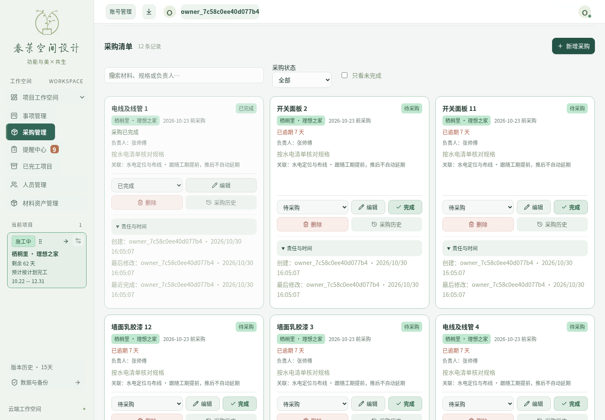
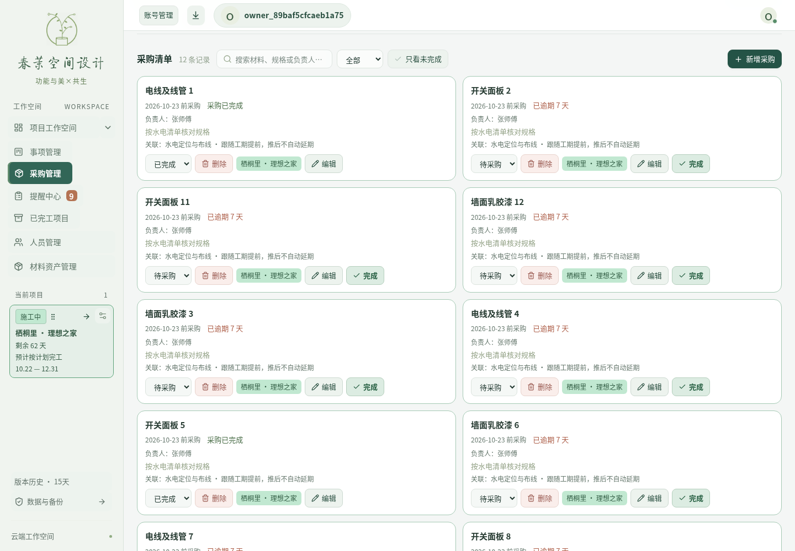
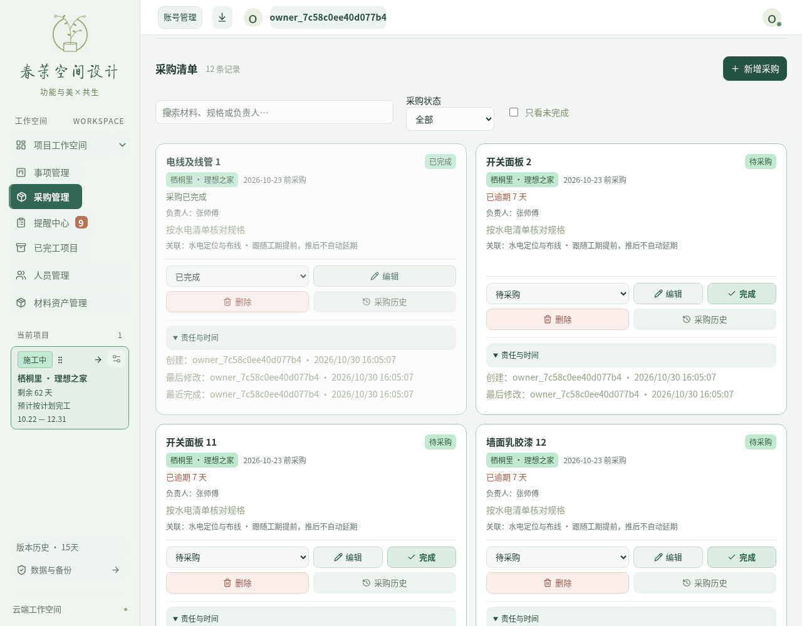
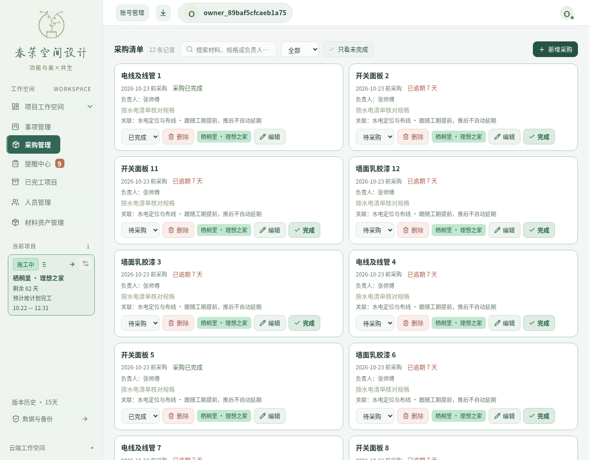
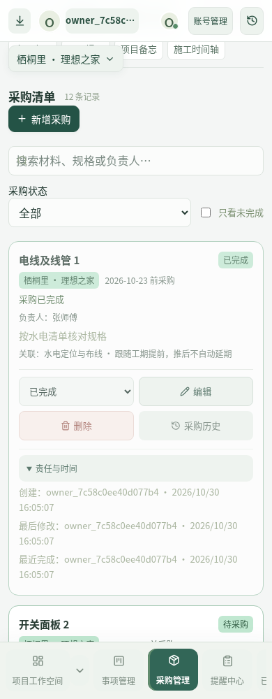
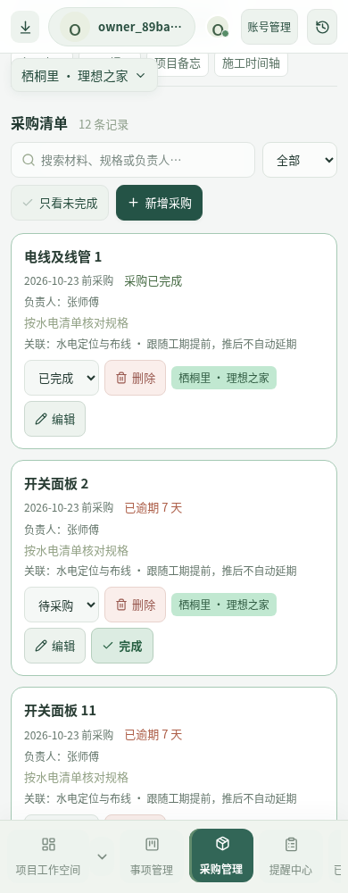
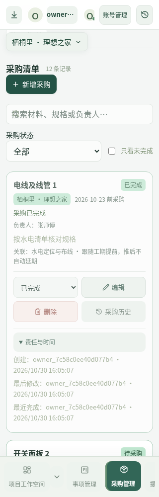
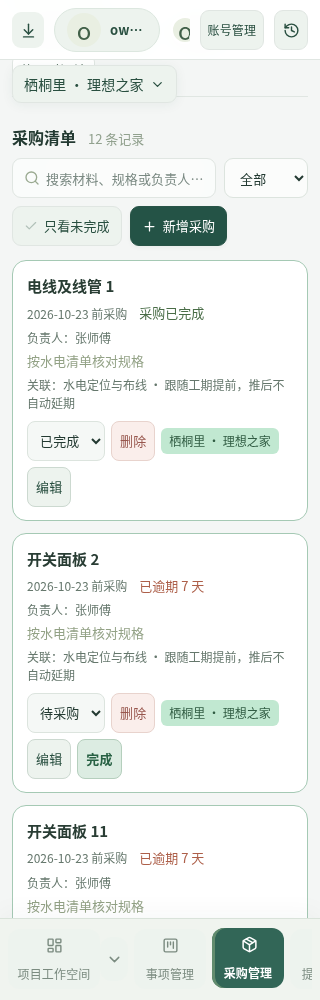

下方为采购区域可视窗口截图，点击可查看全页原始对比。图片来自 Chromium 打开的真实生产构建与本机隔离 API，使用相同的虚构测试工地及 12 条采购记录。账号均为隔离测试账号。未连接生产网站。
同样数据、每组五次禁用缓存冷启动：本机中位数 456 → 390ms；150ms 延迟、1.6Mbps 下载限速下 2466 → 2164ms。以“云端读取及草稿检查完成、保存状态为已保存、任务条已渲染”为终点。不是线上耗时承诺。
修改前原始样本与请求瀑布 · 修改后原始样本与请求瀑布 · 隔离数据库读性能







